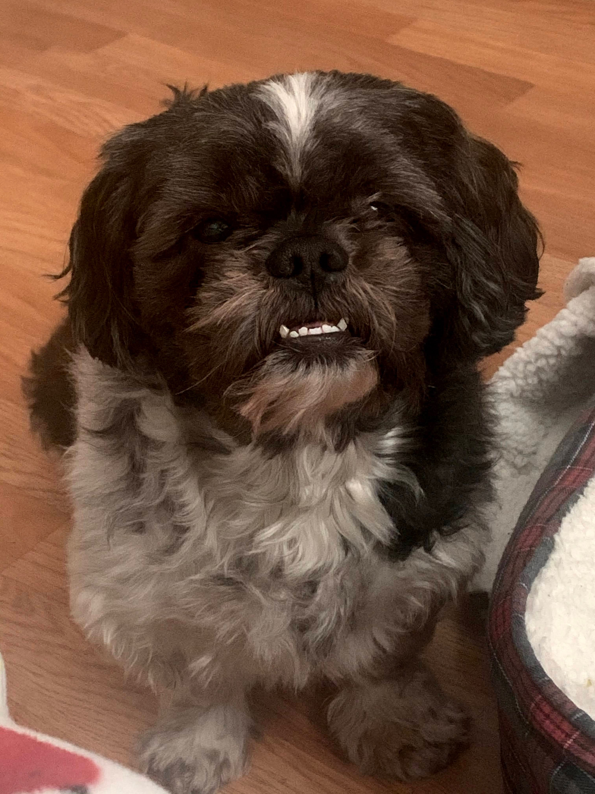
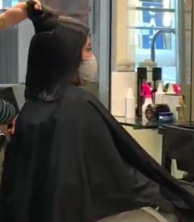

My name is Britney and I am a first year at Barnard. I am a New York Native. I specifically live in Crown Heights, Brooklyn. I know my way around the city pretty well considering I went to school in the city. I love doing different things to my hair. For example, since the fourth grade I have dyed my hair purple, ombre, blonde, burgendy, and I have cut my hair in many different ways. I also recently cut it short(which is something I haven't done since I was a kid). I have a 8 year old Shih-Tzu and on January 18, it will be 8 years of me having him. Don't be afraid to reach out if I can ever help in anthing or if you simply want to explore the city. Of course with also following COVID regulations. Press the links below if you want to connect through Instagram or Linkedin.
Instagram Linkedin